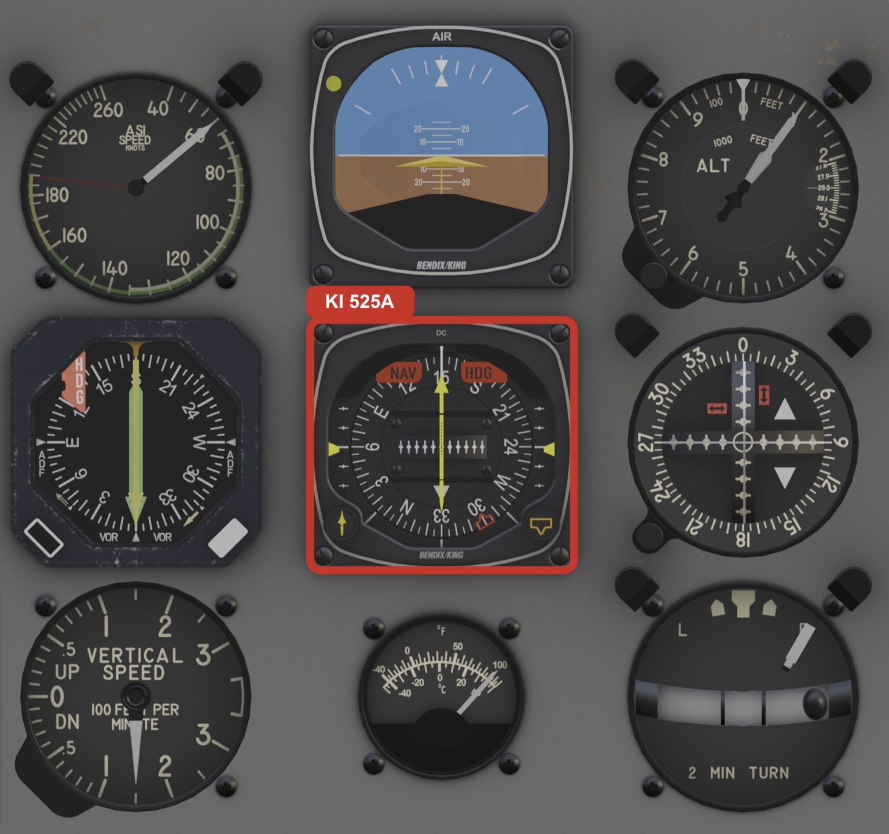
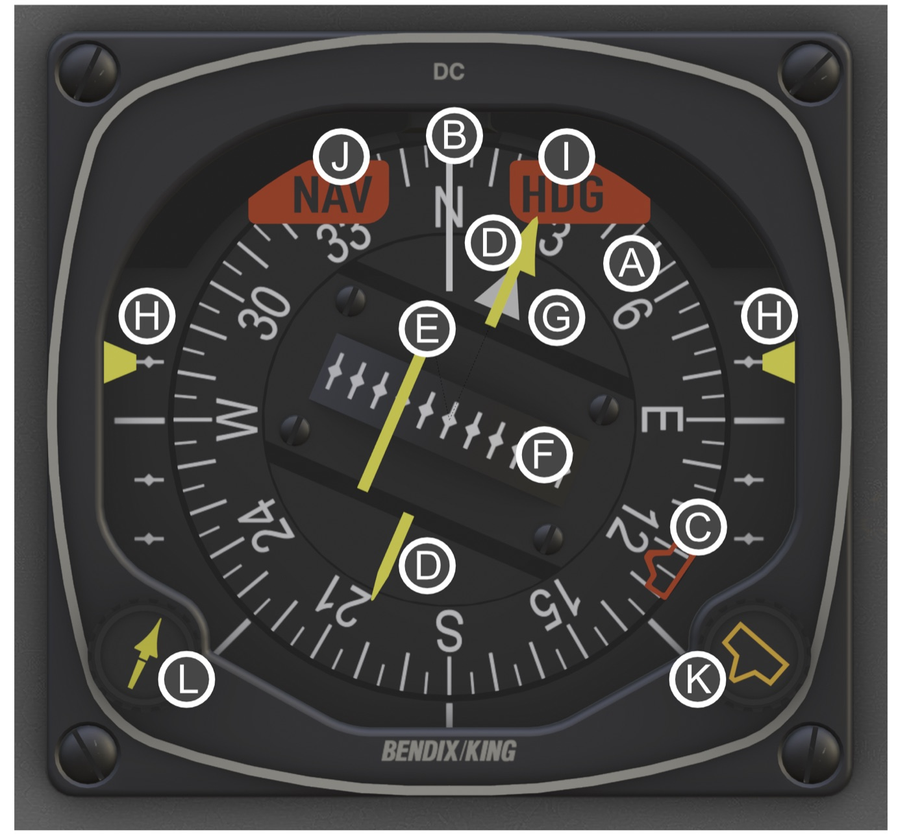
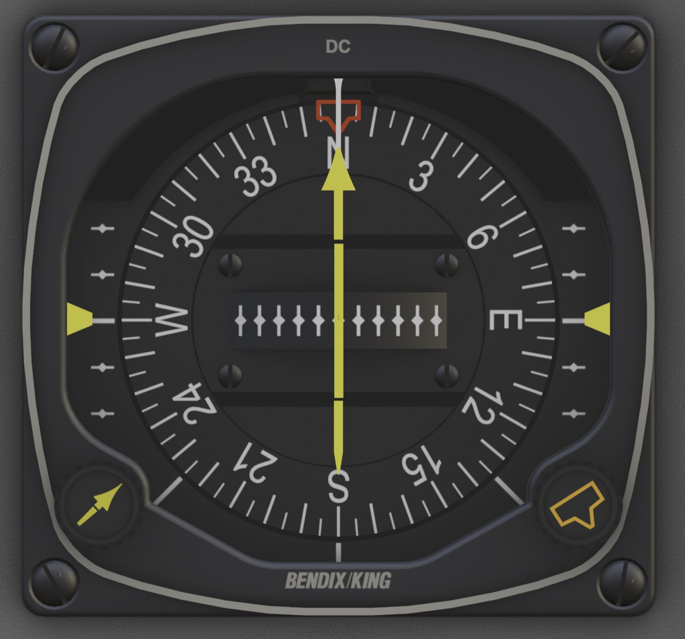

DC-3 Modern Avionics · Operating Guide
KI 525A
Bendix/King Pictorial Navigation Indicator (HSI)
Modern Variant Edition
Published by
This guide covers the Bendix/King KI 525A Pictorial Navigation Indicator, the Horizontal Situation Indicator (HSI) fitted to the DC-3 Modern variant. It is a standalone companion to the main DC-3 Aircraft Operating Manual, written for the pilot who wants to learn the instrument cockpit-first: what each part of the face means, how to fly a VOR, an ILS, or a GPS course off it, and how it behaves as the aircraft powers up and navigates. The HSI is the primary display of the larger KCS 55A compass system, and this guide explains just enough of that system for the instrument to make sense; you do not need the rest of the panel to follow it.
A Horizontal Situation Indicator takes the two instruments a pilot looks at most, the directional gyro and the VOR course indicator, and merges them into a single picture. The compass card shows your heading; a course pointer laid over that card shows the radial or localizer you have selected; and a deviation bar through the middle shows whether you are left or right of it. Because the course needle rides the rotating card, the whole display is always oriented to the way the aircraft is actually pointing. One glance tells you where you are heading, where your course lies, and how far off it you are.
The KI 525A is a Bendix/King Silver Crown HSI, the indicator designed to work with the KCS 55A slaved compass system. In the DC-3 Modern variant it is the centrepiece of that system: a remote directional gyro (the KG 102A) and a wingtip flux detector (the KMT 112) feed it a continuously corrected magnetic heading, and the KA 51B slaving control on the panel manages that correction. The same heading drives the KI 229 RMI beside it; the two instruments are two faces of one compass system.
The course side of the HSI, the course pointer, the deviation bar, the TO/FROM flag, and the glideslope, is driven by the GNS 530. The 530 is both a nav receiver and a GPS, and a button on its bezel chooses which one feeds the HSI: VLOC for VOR and ILS guidance, or GPS for GPS course guidance. Whichever you select, the HSI shows it, and the autopilot couples to it. The separate VOR/ILS head on the panel is driven by the other radio, the KX 165A (NAV 2), and is covered in its own section of the main manual.

| Parameter | Specification |
|---|---|
| Type | Pictorial Navigation Indicator (HSI), flange-mounted |
| Compass card | Servo-driven, slaved to a remote directional gyro |
| Compass card accuracy | ±2° of local magnetic heading |
| Course guidance | VOR / localizer deviation bar, with TO/FROM |
| Vertical guidance | Glideslope pointers (ILS), retract when no glideslope |
| Warning flags | HDG (heading), NAV (course), and the retracting GS pointers |
| Component | Role |
|---|---|
| KG 102A | Remote directional gyro; the heading reference |
| KMT 112 | Wingtip flux detector; senses magnetic north |
| KA 51B | Slaving control; manages the gyro-to-flux correction (panel-mounted) |
| KI 525A | HSI; this instrument, the primary display |
| KI 229 | RMI; the bearing-pointer display of the same system |
| Display | Driven by |
|---|---|
| Course pointer, deviation bar, TO/FROM | The GNS 530 — VLOC (VOR/LOC) or GPS, per the CDI button |
| Glideslope pointers | The GNS 530 in VLOC, tuned to an ILS (no glideslope in GPS) |
| Heading card and bug | The KCS 55A slaved compass |
| Parameter | Specification |
|---|---|
| Heading side (card, bug, HDG flag) | The KCS 55A: avionics master on, G2 COMPASS breaker closed, 22 VDC minimum |
| Course / CDI / glideslope | Requires the GNS 530 powered and booted; the NAV flag stays in view until it is |
| Warmup | About 1 minute warm, up to 5 minutes cold (the directional gyro) |
If you have only flown a conventional VOR indicator, the HSI is worth a moment to understand, because it removes two of that instrument's oldest traps. On a plain VOR head the dial is fixed: you twist an OBS, the needle swings, and you have to picture in your head how the course lies relative to the nose. Worse, if you fly the course in the reverse direction the needle senses backwards, the dreaded reverse sensing.
The HSI fixes both. The course pointer is mounted on the rotating compass card, so it physically lies on the face the same way the course lies in the world. Select a course of 045 and the pointer sits at 045 on the card, wherever the card happens to be. Fly toward it and the deviation bar tells you "left" or "right" exactly as you see it, fly the reciprocal and the picture simply turns around with you. There is no reverse sensing, and no mental rotation: the instrument is a tiny moving map of your course and your aircraft on it.
Because the course pointer rides the compass card, the HSI always shows your course the way it really lies relative to the nose. Steer toward the deviation bar to close on course; the bar shows your position relative to the selected course, not relative to the instrument.
The face is built around the rotating compass card. A fixed lubber line at the top marks your heading on it. An orange heading bug rides the rim. Across the centre lies the course pointer with its deviation bar; a TO/FROM flag sits beside it. Glideslope pointers ride the left and right edges. Warning flags appear when something is not to be trusted, and the two setting knobs are in the lower corners.

| Element | What it is |
|---|---|
| A – Compass card | A full 360° card that rotates so your current magnetic heading sits under the lubber line. Driven by the slaved compass system, not a free gyro. |
| B – Lubber line | The fixed index at the top of the face. The number under it is your magnetic heading. |
| C – Heading bug | The orange marker on the card rim. Set it with the HDG knob; it is your selected heading and the autopilot's heading reference. |
| D – Course pointer | The arrow that lies across the card at your selected course. The head shows the course; the tail shows the reciprocal. Set with the CRS knob. |
| E – Deviation bar (CDI) | The centre section of the course pointer. It slides sideways to show how far left or right of the selected course you are. |
| F – Deviation dots | The lateral scale the bar moves against. Centre is on course; full deflection is full-scale deviation or beyond. |
| G – TO/FROM flag | A small triangle showing whether the selected course takes you to or from the VOR. Hidden on a localizer. |
| H – Glideslope | Pointers on the left and right edges that show vertical position on an ILS glideslope. They retract out of view when there is no glideslope. |
| I – HDG flag | A warning flag, in view when the heading is not valid (warmup, power loss, or a slaving fault). |
| J – NAV flag | A warning flag, in view when there is no usable VOR/localizer signal. The deviation bar is meaningless while it shows. |
| K – HDG knob | Lower-right knob. Sets the heading bug. |
| L – CRS knob | Lower-left knob. Sets the course pointer. |
The compass card is not a free-running gyro that you reset by hand. It is slaved: a remote directional gyro (the KG 102A) holds a steady heading reference, and a wingtip flux detector (the KMT 112) continuously nudges it onto magnetic north so it never drifts. The KA 51B control on the panel manages that slaving and lets you slew the gyro manually if needed. The HSI repeats the result, your live, corrected magnetic heading, under the lubber line.
The orange bug on the card rim is your selected heading. Set it with the HDG knob in the lower-right corner. It serves two purposes: a visual reminder of the heading you mean to fly, and the command reference for the KAP 140 autopilot, in HDG mode the autopilot turns the aircraft to fly the bug. Because the bug rides the card, it tracks around to stay at its selected heading as the card turns beneath it.
The HDG flag is the heading warning flag. It is in view whenever the displayed heading cannot be trusted: no power to the compass system, a servo fault, or, most commonly, a directional gyro that has not finished spinning up. When the flag is in view, read no heading from the card.
The KG 102A is a real gyroscope, and like any gyro it takes time to spin up to speed. When you first power the avionics the HDG flag will be in view and the card will not be reliable. Warmup takes about a minute when the aircraft is warm, and as long as five minutes in the cold. This is correct behavior, not a fault. When the gyro is up to speed and slaved, the flag snaps up out of sight and the card comes alive. Plan your cold-and-dark start so the compass has time to align before you need it.
You may also see the HDG flag flick into view briefly during a fast slave, when the system is driving the card quickly onto magnetic north (at power-up, or after a large heading correction). That is the system telling you the heading is moving and momentarily not to be trusted; it clears as soon as the card settles. Because the KI 525A and the KI 229 RMI share the same KCS 55A system, they raise and stow their heading flags together.
The course pointer is the arrow laid across the card. In VLOC mode you set it yourself with the CRS knob (lower-left corner) to the radial or localizer course you want to fly; the head sits on that course on the card, the tail on its reciprocal. The deviation bar, the floating centre section of the pointer, then shows where you are relative to that course: centred means on course, displaced to one side means you are off to that side and should steer toward the bar to close on it.
Everything on the course side of this HSI, the pointer, the deviation bar, the TO/FROM flag, and the glideslope, comes from the GNS 530. The 530 carries two kinds of guidance, and the CDI button on its bezel chooses which one drives the HSI:
Press the CDI button to toggle between them; the HSI swings to whatever the 530 is now feeding it, and the autopilot follows the same selection. A coupled approach therefore flies the localizer in VLOC or the GPS track in GPS, depending purely on what you have selected here.
The HSI shows whatever the GNS 530 is providing. For VOR or ILS, select VLOC and tune and identify the station on the 530. For GPS, select GPS and load a flight plan. The KX 165A (NAV 2) does not drive this HSI, it feeds the separate VOR/ILS head.
How much ground each dot represents depends on what you have tuned. On a VOR, full-scale deflection of the bar is about 10° off the selected radial, generous, forgiving spacing for en-route tracking. On a localizer the bar is far more sensitive, roughly 2½° full-scale, so it comes alive quickly and a small correction moves it a long way. Expect the bar to be lively as you intercept an ILS. In GPS, the bar reads cross-track distance rather than an angle, and the 530 tightens its sensitivity automatically as you move from en-route into the approach.
With a VOR tuned, the TO/FROM flag shows whether flying the selected course will take you toward the station or away from it. It is simply a sense indicator; it does not change how you fly the bar. On a localizer there is no TO/FROM, and the flag is hidden.
A common trap: the CRS pointer here (and the OBS knob on the separate VOR/ILS head) selects an absolute magnetic course to fly, not where the station sits relative to your nose. If a VOR is off your right wing, you do not dial its relative bearing; you dial the magnetic course that points at it. Worked example: you are on the station's 174° radial, so the magnetic bearing to the station is the reciprocal, 354°. Set the course to 354° and the bar centres with TO; set it to 174° and it centres with FROM. Any other value, including the station's relative bearing off the wing, leaves the bar deflected.
The KAP 140 autopilot couples to whatever the HSI is showing, in NAV and APR modes it tracks the course on the HSI's selected source. In VLOC, set the pointer to the inbound course with the CRS knob before you arm the mode; in GPS, the 530 supplies the course and the autopilot flies the flight plan. Either way the autopilot follows the CDI button: select VLOC and it flies the localizer, select GPS and it flies the GPS track. See the KAP 140 guide for the coupling procedure.
When the GNS 530 is in VLOC with an ILS tuned and the glideslope signal is being received, two glideslope pointers swing into view on the left and right edges of the face. Read them against the centre line: a pointer above centre means the glideslope is above you, fly up to it; below centre, fly down. Centred on both lateral and vertical bars means you are on the localizer and on the glideslope, the picture you want on final.
The glideslope pointers only mean something when a glideslope is actually being received. With no ILS tuned, on a VOR, in GPS mode, or out of range, they sit retracted up out of view behind the bezel, that is the instrument telling you it has no vertical guidance. When a usable glideslope appears, the pointers take a short moment (a few seconds) to settle in before they read; this brief delay is normal. Do not expect a glideslope on a VOR, in GPS, or on a localizer-only approach.

Two knobs in the lower corners set the two movable elements of the face. The HDG knob, lower right, drives the heading bug; the CRS knob, lower left, drives the course pointer in VLOC. Turn a knob and its element rotates around the card with it.
One thing to note about the CRS knob: it only sets the course in VLOC. In GPS the 530 owns the course (the pointer follows the active leg's desired track), so the CRS knob is inert, turn it and nothing moves. Switch the CDI button back to VLOC and the knob is live again. This is a simplification: on the real installation the knob stays live in GPS and the 530 prompts you to set the course by hand, which the pointer here does for you.
Both knobs are accelerating: nudge one and it steps a fraction of a degree at a time for precise setting; keep turning and it speeds up. Slow down or reverse and it drops back to fine steps. The acceleration tops out at about a degree per click, so single clicks are for trimming the last few degrees; to move the bug or pointer a long way round the card, hold the mouse button and drag rather than clicking repeatedly.
The HDG and CRS knobs are mechanical; they position the bug and course pointer whether or not the avionics are powered. You can preset both before you ever switch the master on. The card itself, though, only comes alive once the compass system is powered and the gyro has spun up.
The HSI has three independent ways of telling you a part of its display is not to be trusted. Learn them, and you will never read a stale needle.
| Indication | Means | So |
|---|---|---|
| HDG flag in view | The heading is not valid: gyro warming up, power lost, or a slaving fault. | Read no heading from the card. Normal at start-up, wait out the warmup. |
| NAV flag in view | No usable guidance from the GNS 530: out of range, nothing tuned/loaded, or the 530 off or still booting. | Ignore the deviation bar. Confirm the 530 is up, the source (VLOC/GPS) is selected, and a station is tuned or a flight plan loaded. |
| Glideslope pointers retracted | No glideslope being received. This is the HSI's glideslope "flag." | Expect no vertical guidance. Normal on a VOR, in GPS, or a localizer-only approach. |
A localizer carries no TO/FROM, so the TO/FROM triangle hides on an ILS, that is normal and does not mean the signal is bad. As long as the NAV flag is stowed, the deviation bar is live and trustworthy. Watch the NAV flag, not the TO/FROM, to judge whether the course bar can be believed.
Powered, warmed up, and slaved: the HDG flag is stowed, the card reads your magnetic heading under the lubber line and tracks smoothly through turns, and the heading bug sits where you set it. With the GNS 530 up and providing guidance (VLOC or GPS), the NAV flag is stowed and the deviation bar reads your position relative to the selected course; on an ILS in VLOC the glideslope pointers are in view. The bug and course pointer move crisply with their knobs.
| Indication | Meaning | What to do |
|---|---|---|
| HDG flag in view at start-up | Normal. The gyro is still spinning up. | Wait out the warmup (up to ~5 min cold). The flag stows when the compass is valid. |
| HDG flag in view in flight | The compass system has lost power, or the slaving servo cannot hold heading. | Check the G2 COMPASS breaker and the avionics bus. Cross-check the magnetic compass; expect the RMI to flag too. |
| NAV flag in view | No usable guidance from the GNS 530 (off, still booting, nothing tuned/loaded, or out of range). | Confirm the 530 is up, the source (VLOC/GPS) is selected, and a station is tuned or flight plan loaded. The deviation bar is meaningless until it stows. |
| No glideslope on an ILS | Out of range or below/above the beam, still in the brief settle delay, or the 530 is in GPS not VLOC. | Confirm VLOC is selected and an ILS (not localizer-only or VOR) is tuned; continue the intercept and the pointers appear once the glideslope is received. |
| Card heading wrong but no flag | The gyro is running but slaved to the wrong heading, or in free (unslaved) mode. | Use the KA 51B to re-slave or slew the card onto the correct magnetic heading. |
| Deviation bar will not centre | Wrong course set, off the radial, or reverse intercept geometry. | Confirm the course pointer is on the intended radial/front course; re-check with the CRS knob. |
LES DC-3 · KI 525A HSI Operating Guide · DC-3 Modern Avionics Series
Leading Edge Simulations · Published by X-Aviation